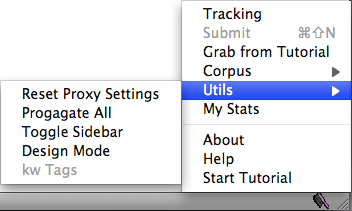

This section describes the status bar menu, depicted below.

- Tracking
Here you can turn on or off whether sections of the Web page you are currently viewing are highlighted in pink. Usually there is no need to disable tracking. However, in some rare cases, this might help you to get a better view on a page before tagging it.
- Submit
When you are done tagging a page, i.e. when everything on the page is green, red, or yellow, you can submit the page with this menu option - and the next page will load automatically. For your convenience, you can also use the keyboard shortcut options+shift+N.
- Grab Page
Clicking here loads a new, un-annotated page. Once you annotated the whole corpus, you will be redirected to your personal statistics page.
- Corpus
Here you can select one of the (predefined) available corpora. But you should stick to the Canola corpus for now.
- Utils
The options in this menu make your life easier when tagging pages.
- Propagate
Here you can explicitly propagate a given tag down to all sibling nodes. On the server this is done automatically however, here it is helpful, for example, when you have a large portion that should be tagged red but all its siblings should be tagged green. You can then tag the parent node green, propagate, and re-tag the parent node as red. This way you do not need to tag all the siblings separately. (Try this on the Examples and check the Tips & Tricks).
- Toggle Sidebar
Clicking here opens the sidebar. In the sidebar you can see all of the text in the current page and how it is tagged. A given tag is usually propagated down to lower nodes in the DOM tree automatically, but sometimes it may be unclear (i.e. not directly visible in the page) how a particular portion of text is tagged. In the sidebar you can easily see whether it is tagged red, green, or yellow.
- Design Mode
This is a debugging feature and you must not use it while tagging pages.
- My Stats
This menu option will send you to your KrdWrd account. There you can see how many pages you have already tagged, and you can view, re-submit and delete your tagged pages.
egon w. stemle
2014-11-06